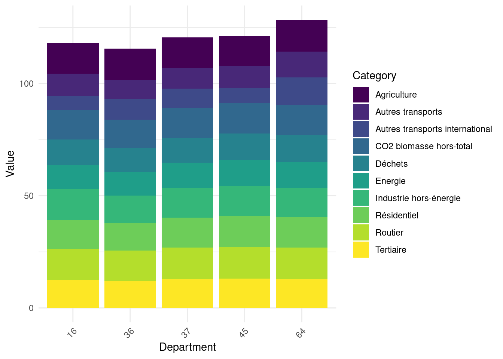
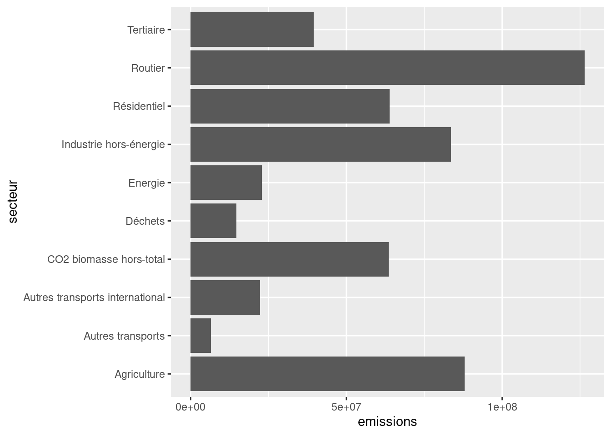
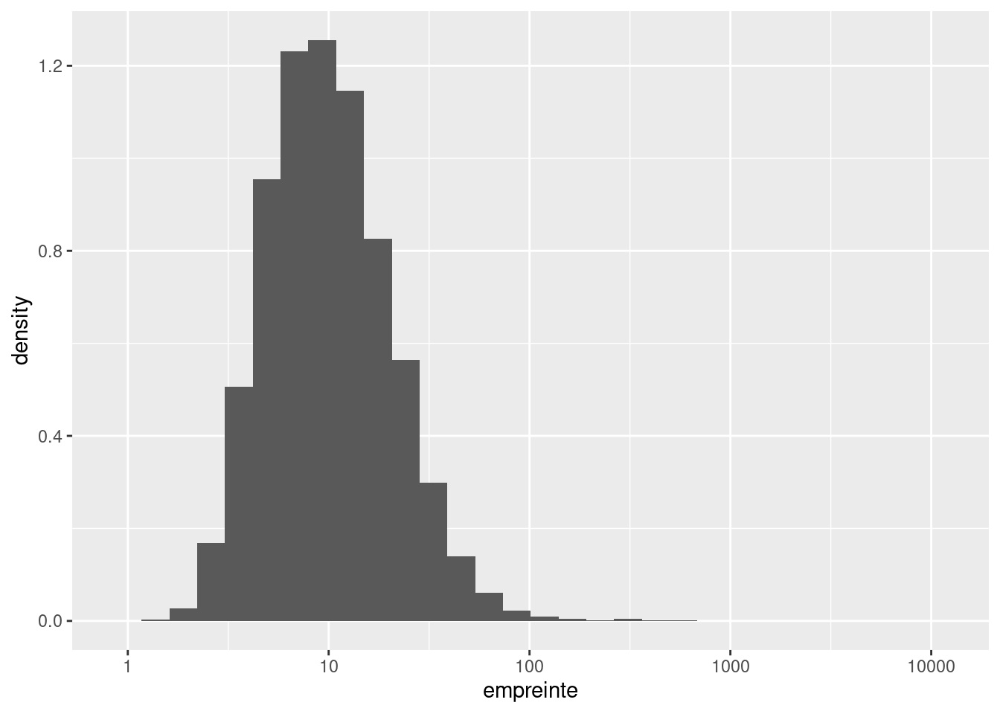
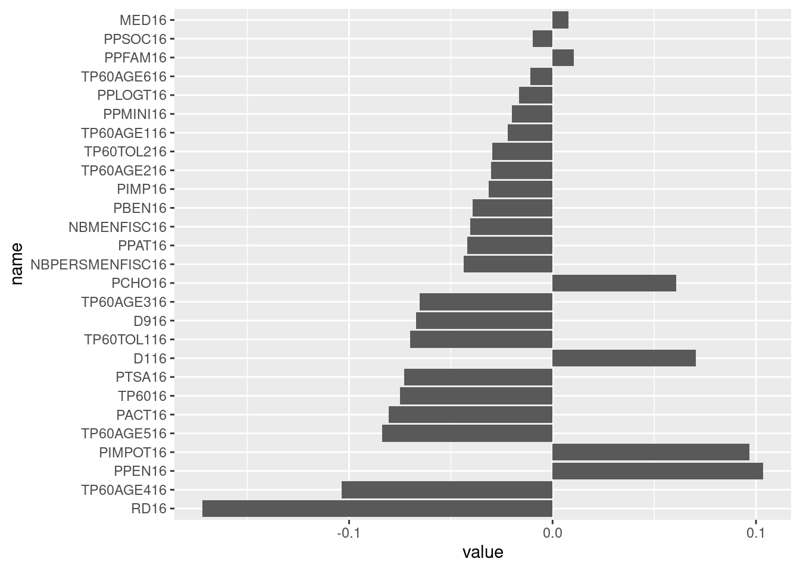

"une annotation explicative m'accompagne à droite"- 1
- Je m’affiche quand on passe la souris sur moi 🐭 !
Dans ce deuxième TP, nous allons apprendre à importer et manipuler des données avec .
Si vous êtes intéressés par Python , une version très proche de ce TP est disponible dans mon cours de l’ENSAE.
Certains exemples de code présentent des annotations sur le côté, passez votre souris dessus pour les afficher, comme ci-dessous
"une annotation explicative m'accompagne à droite"Dans ce chapitre, nous allons principalement utiliser les packages suivants du tidyverse:
readr pour l’import de données ;dplyr pour la manipulation de données.Le tidyverse n’est pas le seul écosystème complet pour analyser des données.
Néanmoins, pour une introduction à , c’est certainement le plus raisonnable à adopter.
Les écosystèmes concurrents ou complémentaires (data.table, arrow, duckdb) nécessitent déjà une bonne compréhension du tidyverse et de ses limites.
Dans ce tutoriel, nous allons utiliser deux sources de données :
ADEME. Le jeu de données est disponible sur data.gouv et requêtable directement dans avec cet url (ce sera l’objet du premier exercice)1.doremifasol et insee qui simplifient l’accès aux données de l’Insee disponibles sur le site web insee.fr ou via des API.est un langage open source. N’importe qui peut donc proposer du code pour accroître les fonctionnalités du langage. Un ensemble cohérent de fonctionnalités s’appelle une librairie ou un package.
Comme l’équipe qui gère le langage n’a pas vocation à intégrer toutes les librairies dans le langage de base (celui-ci se doit de rester, comme son nom l’indique, basique), il existe des espaces communautaires où les gens peuvent mettre à disposition leurs packages. Dans l’écosystème , les deux principaux2 sont:
CRAN (Comprehensive R Archive Network): le dépôt officiel et historique de librairies . Pour installer un package stocké dans cet espace, on utilise install.package ;Github : le réseau social du code open source. Pour installer un package stocké dans cet espace, on utilise remotes::install_github3En général, les packages avec une certaine maturité sont sur le CRAN. Github a un aspect plus fourre-tout où on trouve des mines d’or à côté de choses de qualité plus variable.
Certains packages que nous verrons ne sont pas sur le CRAN car la procédure de validation pour pouvoir y déposer son package est assez lourde et fatiguante pour des développeurs bénévoles, généralement non rémunéré pour ce travail et qui effectuent souvent cela la nuit.
Nous allons supposer que les principales librairies du tidyverse sont déjà installées. Sinon, vous pouvez les installer en suivant la documentation en ligne.
Pour installer un package disponible sur le CRAN, par exemple le package insee, vous pouvez faire:
install.packages("insee")Pour installer un package disponible sur Github , par exemple doremifasol qui est disponible sur le dépôt du compte InseeFrLab, on fait:
remotes::install_github('inseefrlab/DoReMIFaSol')Pour commencer, nous allons importer les données de l’Ademe à l’aide du package readr[^readcsv].
readr et observer les données
Voici l’URL sur lequel les données sont disponibles
url <- "https://koumoul.com/s/data-fair/api/v1/datasets/igt-pouvoir-de-rechauffement-global/convert"readr pour importer ces données. Nommer cet objet emissions4head et observer la différence d’affichage avec, par exemple, ce dataframe:library(readr)
emissions <- read_csv(url)Rows: 35798 Columns: 12
── Column specification ────────────────────────────────────────────────────────
Delimiter: ","
chr (2): INSEE commune, Commune
dbl (10): Agriculture, Autres transports, Autres transports international, C...
ℹ Use `spec()` to retrieve the full column specification for this data.
ℹ Specify the column types or set `show_col_types = FALSE` to quiet this message.data.frame(
"com" = c(1,2),
"val" = rnorm(2)
) com val
1 1 0.5667052
2 2 -0.4524874emissions. Comprenez-vous maintenant pourquoi cet objet est un peu différent d’un dataframe de base ?dplyrread_csv (très bien faite) ou chercher des exemples en ligne pour découvrir cette fonction. ⚠️ Ne pas utiliser read.csv (fonction de base) qui n’est pas performante.
En ce qui concerne nos informations communales, on va utiliser l’une des plus sources de l’Insee les plus utilisées : les données Filosofi. Afin de faciliter la récupération de celles-ci, nous allons utiliser le package communautaire doremifasol :
library(doremifasol)
library(tibble)
filosofi <- as_tibble(
telechargerDonnees("FILOSOFI_COM", date = 2016)
)
head(filosofi)# A tibble: 6 × 29
CODGEO LIBGEO NBMENFISC16 NBPERSMENFISC16 MED16 PIMP16 TP6016 TP60AGE116
<chr> <chr> <dbl> <dbl> <dbl> <dbl> <dbl> <dbl>
1 01001 L'Abergeme… 313 796. 22679 NA NA NA
2 01002 L'Abergeme… 101 248 24382. NA NA NA
3 01004 Ambérieu-e… 6363 14228 19721 49 17 19
4 01005 Ambérieux-… 633 1662. 23378 NA NA NA
5 01006 Ambléon NA NA NA NA NA NA
6 01007 Ambronay 1087 2684 22146. 57 NA NA
# ℹ 21 more variables: TP60AGE216 <dbl>, TP60AGE316 <dbl>, TP60AGE416 <dbl>,
# TP60AGE516 <dbl>, TP60AGE616 <dbl>, TP60TOL116 <dbl>, TP60TOL216 <dbl>,
# PACT16 <dbl>, PTSA16 <dbl>, PCHO16 <dbl>, PBEN16 <dbl>, PPEN16 <dbl>,
# PPAT16 <dbl>, PPSOC16 <dbl>, PPFAM16 <dbl>, PPMINI16 <dbl>, PPLOGT16 <dbl>,
# PIMPOT16 <dbl>, D116 <dbl>, D916 <dbl>, RD16 <dbl>La fonction as_tibble nous sert à transformer le dataframe de base (doremifasol ne fait pas d’a priori sur l’écosystème de manipulation adopté) en dataframe adapté à une exploitation via le tidyverse.
Comme c’est readr ou doremifasol qui ont géré automatiquement l’import des données, on va faire un petit contrôle qualité:
emissions et filosofi. Quelles sont les colonnes communes ? Utiliser la fonction intersect et comprendre la nature du problème.Ensuite, on vérifie les dimensions des DataFrames et la structure de certaines variables clés. En l’occurrence, les variables fondamentales pour lier nos données sont les variables communales. Ici, on a deux variables géographiques: un code commune et un nom de commune. On va donc vérifier qu’elles sont bien adaptées à l’analyse statistique.
filosofi les noms de communes qui correspondent à plusieurs codes communes et sélectionner leurs codes. En d’autres termes, identifier les CODGEO tels qu’il existe des doublons de LIBGEO et les stocker dans un dataframe duplicatesOn se focalise temporairement sur les observations où le libellé comporte plus de deux codes communes différents
filosofi ces observations. Pour mieux y voir, réordonner la base obtenue par order alphabétiqueNBPERSMENFISC16) et quelques statistiques descriptives de ces données. Comparer aux mêmes statistiques sur les données où libellés et codes communes coïncidentfilosofi les villes dont le libellé est égal à Montreuil. Vérifier également celles qui contiennent le terme ‘Saint-Denis’Pour la question 8, vous devriez obtenir ceci:
# A tibble: 4 × 30
CODGEO LIBGEO NBMENFISC16 NBPERSMENFISC16 MED16 PIMP16 TP6016 TP60AGE116
<chr> <chr> <dbl> <dbl> <dbl> <dbl> <dbl> <dbl>
1 93048 Montreuil 43996 108682 18428 55 26 29
2 93066 Saint-Denis 39469 108346. 14622. 39 38 35
3 97411 Saint-Denis 57567 145396. 16317. 35 34 47
4 97415 Saint-Paul 37064 105829 16279. 35 33 42
# ℹ 22 more variables: TP60AGE216 <dbl>, TP60AGE316 <dbl>, TP60AGE416 <dbl>,
# TP60AGE516 <dbl>, TP60AGE616 <dbl>, TP60TOL116 <dbl>, TP60TOL216 <dbl>,
# PACT16 <dbl>, PTSA16 <dbl>, PCHO16 <dbl>, PBEN16 <dbl>, PPEN16 <dbl>,
# PPAT16 <dbl>, PPSOC16 <dbl>, PPFAM16 <dbl>, PPMINI16 <dbl>, PPLOGT16 <dbl>,
# PIMPOT16 <dbl>, D116 <dbl>, D916 <dbl>, RD16 <dbl>, probleme <lgl>Alors que pour la question 9, vos deux dataframes ressembleront à
# A tibble: 4 × 29
CODGEO LIBGEO NBMENFISC16 NBPERSMENFISC16 MED16 PIMP16 TP6016 TP60AGE116
<chr> <chr> <dbl> <dbl> <dbl> <dbl> <dbl> <dbl>
1 28267 Montreuil 215 503 24823. NA NA NA
2 62588 Montreuil 994 1951 18762 NA NA NA
3 85148 Montreuil 340 884. 19340 NA NA NA
4 93048 Montreuil 43996 108682 18428 55 26 29
# ℹ 21 more variables: TP60AGE216 <dbl>, TP60AGE316 <dbl>, TP60AGE416 <dbl>,
# TP60AGE516 <dbl>, TP60AGE616 <dbl>, TP60TOL116 <dbl>, TP60TOL216 <dbl>,
# PACT16 <dbl>, PTSA16 <dbl>, PCHO16 <dbl>, PBEN16 <dbl>, PPEN16 <dbl>,
# PPAT16 <dbl>, PPSOC16 <dbl>, PPFAM16 <dbl>, PPMINI16 <dbl>, PPLOGT16 <dbl>,
# PIMPOT16 <dbl>, D116 <dbl>, D916 <dbl>, RD16 <dbl># A tibble: 10 × 29
CODGEO LIBGEO NBMENFISC16 NBPERSMENFISC16 MED16 PIMP16 TP6016 TP60AGE116
<chr> <chr> <dbl> <dbl> <dbl> <dbl> <dbl> <dbl>
1 01344 Saint-Den… 2562 6036 23258 63 7 NA
2 01345 Saint-Den… 965 2280 21464 53 NA NA
3 02818 Villiers-… 365 901 22221 NA NA NA
4 11339 Saint-Den… 224 474. 18477. NA NA NA
5 14571 Saint-Den… 124 298. 20860. NA NA NA
6 14572 Saint-Den… 331 770. 20080 NA NA NA
7 17323 Saint-Den… 733 1401 21364. NA NA NA
8 18204 Saint-Den… 125 314. 21446. NA NA NA
9 21442 Morey-Sai… 285 664. 25946. NA NA NA
10 25129 Chassagne… 50 116 21357. NA NA NA
# ℹ 21 more variables: TP60AGE216 <dbl>, TP60AGE316 <dbl>, TP60AGE416 <dbl>,
# TP60AGE516 <dbl>, TP60AGE616 <dbl>, TP60TOL116 <dbl>, TP60TOL216 <dbl>,
# PACT16 <dbl>, PTSA16 <dbl>, PCHO16 <dbl>, PBEN16 <dbl>, PPEN16 <dbl>,
# PPAT16 <dbl>, PPSOC16 <dbl>, PPFAM16 <dbl>, PPMINI16 <dbl>, PPLOGT16 <dbl>,
# PIMPOT16 <dbl>, D116 <dbl>, D916 <dbl>, RD16 <dbl>Ce petit exercice permet de se rassurer car les libellés dupliqués sont en fait des noms de commune identiques mais qui ne sont pas dans le même département. Il ne s’agit donc pas d’observations dupliquées. On se fiera ainsi aux codes communes, qui eux sont uniques.
On va commencer l’exploration de données. Cela implique un peu de nettoyage de données en amont.
INSEE commune en code_insee5.dep dans emissions et dans filosofi en utilisant la fonction str_sub du package stringr6.Commençons le calcul de nos premières statistiques descriptives.
Calculer les émissions totales par secteur pour chaque département. Mettre en log ces résultats dans un objet emissions_log. La Figure 1 illustre la structure de ces émissions sur 5 départements aléatoires.
Repartir du jeu de données emissions. Calculer les émissions totales par département et sortir la liste des 10 principaux émetteurs de CO2 et des 5 départements les moins émetteurs. Sans faire de merge, regarder les caractéristiques de ces départements (population et niveau de vie)
library(tidyr)
library(ggplot2)
emissions_log_sample <- emissions_log %>%
filter(dep %in% sample(unique(dep),5))
emissions_log_sample <- emissions_log_sample %>%
pivot_longer(cols = -dep, names_to = "Category", values_to = "Value")
ggplot(emissions_log_sample, aes(x = dep, y = Value, fill = Category)) +
geom_bar(stat = "identity") +
labs(x = "Department", y = "Value") +
theme_minimal() +
theme(axis.text.x = element_text(angle = 45, hjust = 1)) + scale_fill_viridis_d()Warning: Removed 1 rows containing missing values (`geom_bar()`).
str_sub
library(stringr)
df %>% mutate(x = str_sub(y, start = 3, end = 5))On présente généralement deux types de données :
Un exemple de la distinction entre les deux peut être pris à l’ouvrage de référence d’Hadley Wickham, R for Data Science:

On est souvent amené avec à restructurer les données pour les allonger (wide to long) et les élargir (long to wide).
C’est le package tidyr (qui appartient au tidyverse) qui permet de faire ce type de transformations.
L’aide mémoire suivante aidera à se rappeler les fonctions à appliquer si besoin:

Le fait de passer d’un format wide au format long (ou vice-versa) peut être extrêmement pratique car certaines fonctions sont plus adéquates sur une forme de données ou sur l’autre.
En règle générale, les formats long sont souvent préférables car il est plus facile d’itérer sur des lignes que sur des colonnes du fait de la nature vectorielle de . C’est notamment la forme de données privilégiée pour préparer des graphiques avec ggplot, que nous découvrirons dans le prochain chapitre.
Une fois le dataframe df_long_summary créé, le code minimal pour réaliser le barplot voulu est:
ggplot(df_long_summary) +
geom_bar(
aes(y = secteur, x = emissions),
stat ='identity'
)
Pas besoin d’aller plus loin pour le moment, nous ferons plus de ggplot ultérieurement.
`summarise()` has grouped output by 'secteur'. You can override using the
`.groups` argument.# A tibble: 6 × 3
# Groups: dep [6]
secteur dep emissions
<chr> <chr> <dbl>
1 Routier 01 1635350.
2 Routier 02 1386403.
3 Agriculture 03 1949985.
4 Routier 04 390568.
5 Routier 05 345859.
6 Routier 06 1561664.TO DO
Une information que l’on cherche à obtenir s’obtient de moins en moins à partir d’une unique base de données. Il devient commun de devoir combiner des données issues de sources différentes.
Nous allons ici nous focaliser sur le cas le plus favorable qui est la situation où une information permet d’apparier de manière exacte deux bases de données (autrement nous serions dans une situation, beaucoup plus complexe, d’appariement flou). La situation typique est l’appariement entre deux sources de données selon un identifiant individuel ou un identifiant de code commune, ce qui est notre cas.
Il est recommandé de lire ce guide assez complet sur la question des jointures avec qui donne des recommandations également utiles en Python .
Dans le langage courant du statisticien, on utilise de manière indifférente les termes merge ou join. Le deuxième terme provient de la syntaxe SQL et c’est celui qui est plutôt utilisé quand on code avec dplyr.
dplyr

NA) avec celles où on a bien une valeur correspondante dans la base Insee`stat_bin()` using `bins = 30`. Pick better value with `binwidth`.Warning: Removed 4454 rows containing non-finite values (`stat_bin()`).

readr offre la possibilité d’importer des données directement depuis un url. C’est l’option prise dans ce tutoriel. Si vous préfèrez, pour des raisons d’accès au réseau ou de performance, importer depuis un poste local, vous pouvez télécharger les données et changer les commandes d’import avec le chemin adéquat plutôt que l’url.↩︎
Il existe également bioconductor mais celui-ci étant surtout orienté biostatistiques (une des communautés académiques ayant adopté le plus tôt), nous ne l’utilisons pas vraiment↩︎
remotes::install_github signifie d’utiliser la fonction install_github du package remotes. Autrement dit, il faut un package pour installer d’autres packages 🤯. C’est parce que Github n’existait pas lors de la création de (années 1990) et que cette fonctionnalité n’a pas été ajouté depuis.↩︎
Par manque d’imagination, on est souvent tenté d’appeler notre dataframe principal df ou data. C’est souvent une mauvaise idée puisque ce nom n’est pas très informatif quand on relit le code quelques semaines plus tard. L’autodocumentation, approche qui consiste à avoir un code qui se comprend de lui-même, est une bonne pratique et il est donc recommandé de donner un nom simple mais efficace pour connaître la nature du dataset en question.↩︎
L’espace dans le nom de la variable est embêtant. Pour pouvoir utiliser le nom de cet variable dans rename, il va falloir utiliser des backticks, c’est-à-dire INSEE commune.↩︎
Les fonctionnalités limitées du langage de base sur la manipulation textuelle sont rapidement contraignantes. On passe ainsi rapidement à stringr même si ce n’est pas l’objet principal du chapitre.↩︎
vous pouvez utiliser directement le morceau de code d’aide si vous n’êtes pas familiers de ggplot↩︎